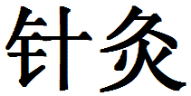

Welcome to OMHS Acupuncture
Brian C. Allen, MSTOM of Wilmington, Delaware is one of the finest and most qualified acupuncturists in the area.
Please read on to discover the basics about acupuncture.
 (zhen jiu)
zhen jiu - acupuncture and moxibustion; to give or have acupuncture and moxibustion.
Acupuncture
From the Latin, acus – a needle, and pungere – to prick.
What is Acupuncture?
- A healing practice originally from China.
- Fine needles are inserted into the body at specific points for treating health problems.
- Most commonly associated with Chinese (Oriental) medicine.
How does Acupuncture work?
- Ancient Chinese discovered that Qi flows through meridians in the body.
- Along those meridians are acupuncture points.
- Qi can be accessed through those points.
- Good health depends on the smooth and proper flow of Qi.
- Acupuncture regulates the Qi flow.
Western Biomedical View
- Acupuncture affects many systems in body:
- Nervous
- Vascular
- Musculoskeletal
- The mechanisms by which acupuncture works are not yet fully understood by Western science.
- Research is becoming more mainstream.